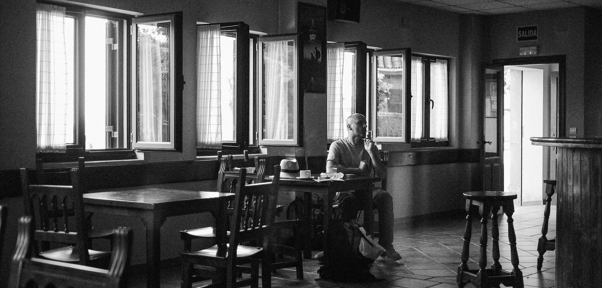

Still Photographer — Based in Seoul
JIMIN IM 임지민
드라마와 영화, 공연의 현장에서
화면 너머의 순간을 사진으로 남깁니다.

01
Selected Works
드라마·영화 스틸, 공연 현장, 비하인드 컷을 작품별로 묶었습니다. 카드를 눌러 작품의 사진을 넘겨 볼 수 있습니다.
작품을 불러오는 중…
02
Filmography
스틸 포토그래퍼로 참여한 작업 전체 목록입니다. 카테고리를 눌러 보세요.
- 2026tvN '해오름달 열이레'
- 2026SBS '멋진 신세계'
- 2025MBC '이강에는 달이 흐른다' 참여
- 2025tvN '첫, 사랑을 위하여' 참여
- 2025독립영화 'TO BE FED'
- 2024넷플릭스 '당신이 죽였다' 참여
- 2024숏드라마 '남주서치'
- 2024영화 '반달'
- 2024세로드라마 '너에게만 몹쓸 짓'
- 2024영화 'Pale Waves'
- 2023독립영화 '내 생애 최고의 날'
- 2023독립영화 '그 가을 우리'
- 2023영화 '증발'
- 2022쿠팡 ‘복학생’
- 2022tvN ‘이번생도 잘 부탁해’
- 2022KBS '두뇌공조'
- 2022KT 스튜디오지니 ‘사장님을 잠금해재’
- 2022tvN ‘슈룹’
- 2022SBS ‘어게인 마이 라이프‘
- 2021JTBC ‘그린마더스클럽’
- 2020중국 Iqiy ‘반시밀당반시상’
- 2019KBS ‘녹두전’
- 2019tvN ‘악마가 너의 이름을 부를 때‘
- 2019tvN ‘자백‘
- 2018tvN ‘나인룸‘
- 2018JTBC ‘스케치’
- 2026연극 'THE MATHER (더마더)'
- 2025N.Flying LIVE ‘&CON4 ENCORE : Let’s Roll &4EVER’
- 2025연극 '문턱'
- 2024뮤지컬 '어제의 시는 내일의 노래가 될 수 있을까'
- 2024연극 'THE FATHER (더파더)'
- 2024연극 '뱀프x헌터' 1차 프로덕션 리허설 참여
- 2024연극 '쉬어매드니스' 17차 프로덕션 리허설 참여
- 2023'루엘' 내한공연(4TH WALL) 스틸 참여
- 2023'브라이언 아담스' 내한공연 스틸 참여
- 2023'코난 그레이' 내한공연 스틸 참여
- 2022뮤지컬 '물랑루즈!' 스틸 참여
- 2022'Maroon 5 Live in Seoul' 스틸 참여
- 2022슈퍼콘서트 ‘빌리아일리시' 스틸 참여
- 2021KCON:TACT HI 스틸 참여
- 2021아스트로 AROHA Festival [Be Mine] 스틸
- 2017성훈 ASIA TOUR 포토그래퍼
- 2017B.A.P PARTY BABY 스틸 참여
- 2016B.A.P LIVE ON EARTH 스틸 참여
- 2024시크릿쥬쥬 x woo!ah! 시크릿쥬쥬 OST MV 스틸
- 2022Lilboi(Rian & Jayb) ‘JUICE’ MV 스틸
- 2018E.DA ‘AGAIM’ MV 스틸
- 2017더킹 ‘LOOK BACK’ MV 스틸 및 앨범 촬영
- 2017더킹 ‘DAMN-OH-TAPE’ 앨범 촬영
- 2016놉케이 ‘클라이막스‘ MV 스틸
- 2017라쉬반 지면광고
- 2017고속선 JR큐슈 지면광고
- 2017오렌지팩토리 ‘한여름밤의 꿈’ 바이럴 콘텐츠 제작 참여
- 2026CGK 세미나 'ZEISS Aatma Mood'
- 2025CGK 세미나 '우리의 수저 세트' 촬영
- 2024대한민국 예술올림픽위원회 창립총회 촬영
- 2024영화 '1923 간토대학살' 르포컷 전시회 촬영
- 2024영화 '1923 간토대학살' 시사회 촬영
- 2023충청남도 제58회 전국기능경기대회 제1경기장 스틸
- 2022현대에너지솔루션 정기 주주총회 촬영
- 2020현대에너지솔루션 정기 주주총회 촬영
- 2018A.CONIC 소속 모델 서울패션위크 비하인드 촬영 2018 S/S , 2017 F/W
- 2017MBN ‘꿈나무 골프대회’ 2016/2017 콘텐츠 제작
- 2016헤이 스타트업 현장 촬영
- 2016스텔라 중국 온라인 플랫폼 팬미팅 진행
- 2016성훈 ‘EXCLUSIVE PARTY’ 진행 및 현장 촬영
- 2024국가유산청 국립해양유산연구소 홍보영상 '너를만나다' 스틸
- 2023다큐멘터리 ‘장동건의 백 투 더 북스‘ 시즌3 스틸
- 2021다큐멘터리 ‘장동건의 백 투 더 북스‘ 시즌2 스틸
- 2019다큐멘터리 ‘장동건의 백 투 더 북스‘ 시즌1 스틸
- 2018한국방송통신 전파진흥원 다큐사례집 인터뷰 촬영
- 2017A. CONIC 소속 모델 프로필 촬영
- 2017오렌지팩토리 서울,경기 및 중국 지점 촬영
- 2017성훈 2017 굿즈(달력 + 메이킹 DVD) 촬영 및 제작
- 2016오렌지팩토리 자사 브랜드 시즌 촬영 2016/2017
- 2016OFUN PEOPLE 온라인 매거진 인터뷰 전담 촬영
03
Contact
촬영 문의와 협업 제안을 기다립니다.
Still Photographer
based in Seoul.